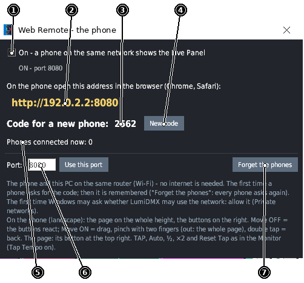
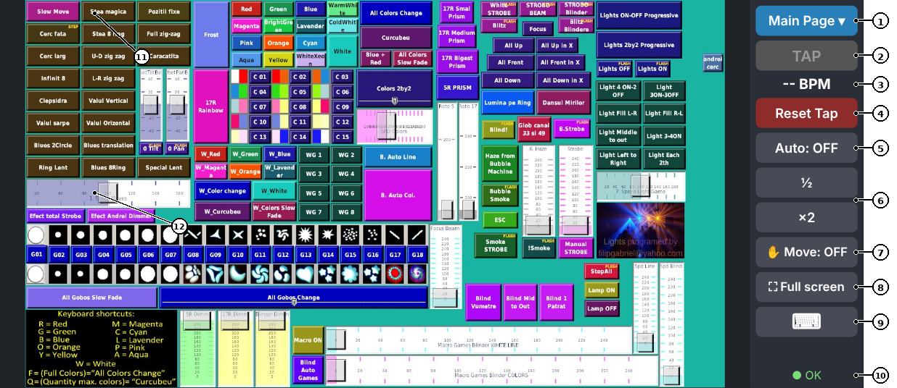
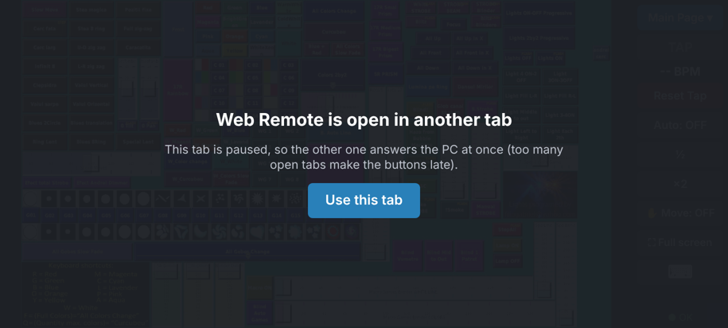
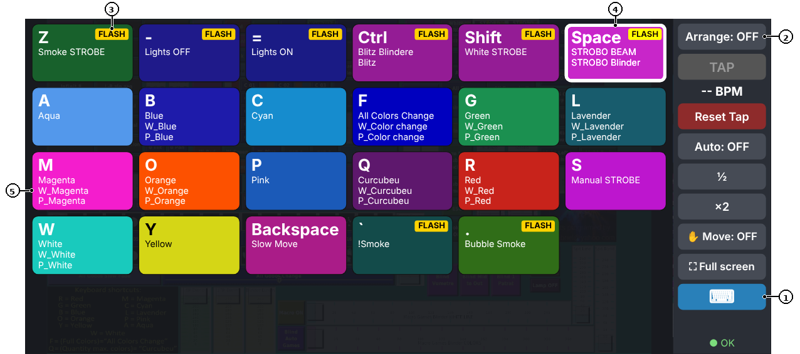
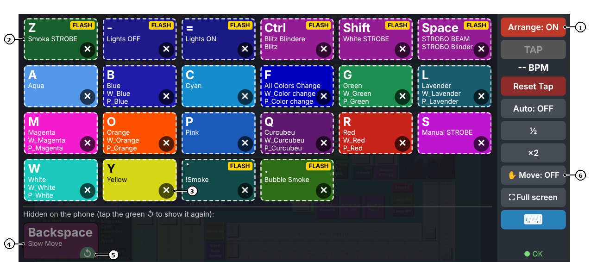

For: FullPlayer
The Live Panel on your phone: the phone shows the page exactly as it is on the PC, and you press its buttons and move its sliders with your finger. On the right are the page, TAP, Auto, ½, ×2 and Reset Tap of Tap Tempo. The phone and the PC must be on the same router (Wi-Fi); no internet is needed and no app is installed - the phone uses its browser (Chrome, Safari).
Options > Web Remote (phone):

| 1 | On - the server for the phone. Off by default: it starts only when you tick it. Left ticked, it starts again with the program; untick it to stop it. Under it: ON with the port, or OFF (and why it could not start, for example a port already taken). |
| 2 | The address to type in the phone's browser: this PC's IP on the network and the port. |
| 3 | The code: the first time, a phone asks for these 4 digits. After that the phone is remembered and does not ask again. |
| 4 | New code: another code for new phones (the phones already paired stay paired). |
| 5 | How many phones are connected now. |
| 6 | Port (8080) and Use this port: change it only when another program uses 8080. The address changes with it. |
| 7 | Forget the phones: every phone asks for the code again. |
The first time, Windows may ask whether LumiDMX may use the network: allow it for Private networks. If the phone cannot open the address, check that it is on the same Wi-Fi as the PC (not on mobile data) and that the Windows firewall lets LumiDMX through.
Hold the phone sideways (landscape): the page is wide, as on the PC. Open the address, type the code once. The page fills the whole height of the screen (no bar above or under it); all the buttons of the phone are in a column on the right. On a phone wider than the page the page stays in the middle; on a narrower one the rest of it is on the right: drag it with a finger on the background, or with Move ON.

The Main Page of a project on a phone held sideways: the page on the whole height, the buttons on the right.
| 1 | The page shown now. Press it: the list of the pages of the Live Panel opens beside it; press one to go to it. The phone shows its own page: changing it on the phone does not change the page on the PC. |
| 2 | TAP: as TAP in the Monitor (the phone's own timing between taps is used, so Wi-Fi delays do not change the BPM). Grey when Tap Tempo is off on the PC. |
| 3 | The tempo (BPM), the same number as in the Monitor and Sound2Light. |
| 4 | Reset Tap: the same as Reset in Tap Tempo - the speeds and the sliders go back as they were before the TAP. |
| 5 | Auto: ON / OFF, as in the Monitor. |
| 6 | ½ and ×2: half or double the tempo. |
| 7 | Move: OFF = the buttons react to your fingers. ON = the buttons do not react: drag to move the page, pinch with two fingers to zoom (pinching out goes down to the whole page), double tap = a bigger view or back to the whole height. Use it to look closer without pressing anything by mistake. |
| 8 | Full screen: the browser hides its address bar and the phone's bars (on phones that allow it). Press it again to come back. |
| 9 | The keyboard: the keyboard shortcuts of the Live Panel's buttons, as keys you can press on the phone (see The keyboard below). Blue while it is open. |
| 10 | OK while the phone is connected, Not connected when it lost the PC (it tries again by itself). |
| 11 | A button: press it as with the mouse. A Flash button stays on while your finger is on it. Several fingers press several buttons at once. |
| 12 | A slider or a speed bar: put your finger on it and drag. |

The keyboard button (9 above) opens the keys that have a shortcut on a Live Panel button of the project - only those. A key does what the same key does on the PC's keyboard: it starts every button that has that shortcut, on every page. The column on the right stays free, so TAP, Reset Tap and Auto work with the keyboard open. The keys take the whole screen (no band on top); with the phone held upright they come two a row. Press the keyboard button again to close it.

The keyboard of a project, with Space held.
| 1 | The keyboard button: blue while the keyboard is open. |
| 2 | Arrange, in Main Page's place while the keyboard is open (the pages are of no use here): OFF = the keys work. ON = you put them in the order you want (see below). |
| 3 | FLASH: the key works only while your finger is on it, as a Flash button. The FLASH keys come first. |
| 4 | A key held: lighter, with a thick white frame. |
| 5 | The names of the buttons the key starts (three at most, then "+ more"). The Main Page's buttons are named first. The key has the colour of its first button. |

Arrange ON: Backspace hidden.
| 1 | Arrange: ON (red). The keys do nothing now - nothing starts by mistake. |
| 2 | The keys have a dashed frame. Drag a key to its place: a dashed gap shows where it lands, the others make room. |
| 3 | ✕ hides the key on the phone (it still works on the PC's keyboard). |
| 4 | The hidden keys, at the end of the list, darker. |
| 5 | The green arrow brings the key back. |
| 6 | Move: ON - the list scrolls with the finger (to reach the hidden keys at the end); the keys do not move, the ✕ and the arrows are not there, nothing is hidden by mistake. Move OFF to drag again. (With Arrange OFF, Move ON scrolls the keys too: they do not react.) |
Press Arrange again (OFF): the order and the hidden keys go to the PC and are kept with the project, in its Sound2Light data (S2L.dat) - the project shows as changed; Save it to keep them. Every phone gets the same order. A key of a new shortcut comes at the end; a shortcut taken away disappears.